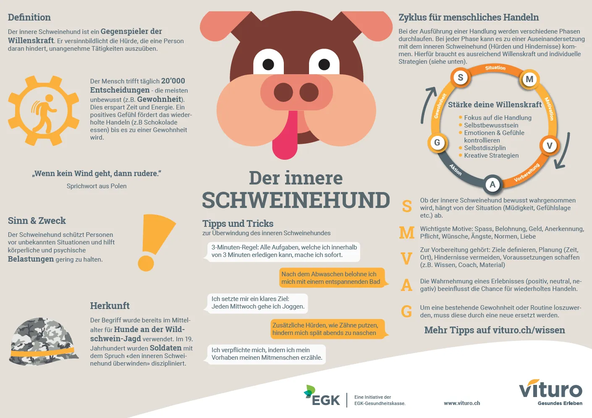

Project nameAll kinds of things
Date2016 - 2021
RoleUX Designer, UX Researcher, Product Designer, UI Designer, Graphic
Artist, Frontend Developer, Video Producer

This is a collection of smaller projects I have been working on over the last few years. Some projects were created in my spare time and others for work.
Based on extensive user research, we developed a game that helped elderly people and their families spark meaningful conversations through nostalgic word puzzles.
Read the paper (German)I got to design and program this website as part of the university class “Information Visualization”. Here you only see the prototype, since the website is no longer available anymore.
In less than 40 hours we designed and developed a small app for the Migros challenge to get people to buy more sustainable products.
During COVID19 I had the opportunity to do a first draft of the design for a donation website.
I had the opportunity to script, film and edit some videos. In my showreel, you will find a small selection of business interviews, events, travel diaries and so on.
As part of a university group project we designed and developed this tool for the Young Leader Federation Switzerland. Here you can find the
We used JavaScript, Angular, NodeJS, MongoDB & Express. My roles were Product Owner, Front End Developer, UX Researcher, UI Designer.
Challenge brief: Design & prototype a “pull to refresh” experience for a photo sharing app.
Design a calendar app to manage your design tasks for the month.
Construct a full month’s calendar utilizing the repeat grid feature. After building the layout of the page, think through how to add a new event, and what that looks like after the event has been added.
Here I would certainly improve the readability in the monthly overview.

I had the opportunity to design some placeholder avatars for an app.
The marketing department of the EGK asked me to create a template for their future Pinterest posts.


The health platform Vituro asked me to create and draw a factsheet for them.
This persona was created for a small team of content managers to always remember who they are trying to address.

For an insurance app and website I got to design some icons for all the different products and coverages.
Today I would try to design them less detailed.
In 2016 I got to script, film and edit a short video for the cooking school "Kochschule Stalder".